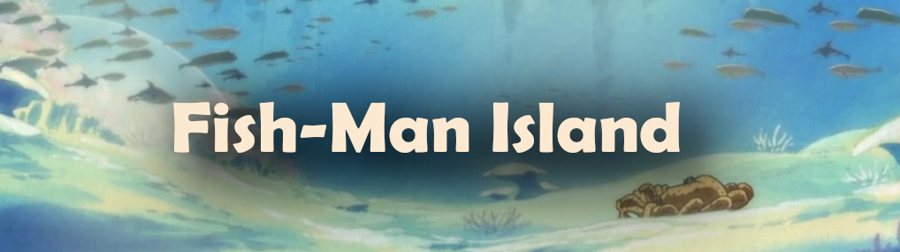
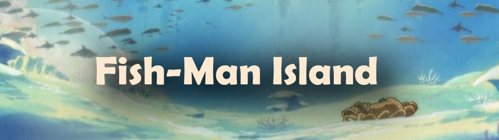

Also known as The Fish-Man Island Saga, she presents the plot after 2 years of timeskip (time advance). The Straw Hats meet again in the Sabaody Archipelago and move to the New World, but for that they need to go through the Island of The Newts and face some pirates who are there.